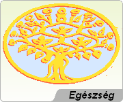

BlogeT
|
[Belépés]
|
József Attila
|
A magyar költészet egyik fő alakja, a XX. század uralkodó eszméinek
világviszonylatban is nagy jelentőségű lírai kifejezője, az internacionalista szocializmus
költői megfogalmazásának egyik példamutatója és vezéralakja.
Jelentősége a nemzetközi irodalomban semmivel sem kisebb, mint Bartóké a zenében.
Életének rövid harminckét éve alatt sorsa nélkülözés, üldöztetés és meg nem értés
volt.
|
|
Tovább
az íráshoz >>>
|
|
Csongor és Tünde
|
A reformkorszak legnagyobb
nemesi költője Vörösmarty Mihály volt. E kor
eszmei törekvése a kor problémájának:
függetlenség és polgárosodás harcának
összekapcsolása volt. Eddig e két eszme csak
külön - külön jelentkezett. (A Martinovics -
szövetség kapcsolja először a két eszmét.)
1800. dec. 1. született Pusztanyéken,
elszegényedett katolikus nemesi családban, nyolc
testvére volt. 1811-től Székesfehérváron,
1816-tól Pesten tanult.
|
|
Tovább
az íráshoz >>>
|
|
Orwell Ghandiról
|
A szenteket mindig bűnösnek
kellene tekinteni, amíg ártatlanságuk be nem
bizonyosodik, bár természetesen nem lehet minden
esetben úgyanazzal a mércével mérni őket.
Gandhi esetében a következő kérdéseket
tennénk föl szívesen: milyen mértékben sarkallta
a hiúság - annak tudata, hogy szerény, meztelen
öregemberként ül az imagyékényén, és merő
szellemi erejével birodalmakat rázkódtat meg -, s
mennyit engedett az elveiből, amikor foglalkozni
kezdett a politikával, annak ellenére, hogy az
természeténél fogva elválaszthatatlan az erőszaktól
és a csalástól?
|
|
Tovább
az íráshoz >>>
|
|
|
|
|
|
Életfa
|
[Belépés]
|
Áramlatok világa
|
A világot vizsgálva, azt oszthatónak látjuk. Részeit tovább
darabolhatjuk egyre kisebb és kisebb összetevőkre. Az oszthatóság határát a technika
lehetőségei szabják meg.
A világ egy óriási folyam, mely mellékáramlatok örvénylő összefonódásaként létezik.
A részek maguk is további kisebb áramlások összegei.
Az élőlények, így az ember is, elemei ezeknek az áramlásoknak. Sőt maguk is
összetett áramlatok.
|
|
Tovább
az íráshoz >>>
|
|
Egészség és betegség
| Az
általános nézet az egészségről:
Az egészséges ember az, aki nem beteg!
Ez egy cáfolhatatlanul igaz kijelentés. Sajnos azonban nem ad
valódi magyarázatot akár az egészség (a betegség hiánya), akár a betegség (az egészség
hiánya) mibenlétére.
Közelítsük meg az egészség fogalmát a környezet és a szervezet kölcsönhatása
irányából. A kölcsönhatások minősége szempontjából osszuk fel azokat az alábbi
szempontok szerint (remélve, hogy a szándék szerinti felosztás lefedi az összes
kölcsönhatást, amely a szervezetet érheti):
|
|
Tovább
az íráshoz >>>
|
|
|

|
|
|
Segít
|
|
Nem tud
Sok
szeretettel
köszöntjük
nevű
látogatóinkat!
|
 |
Ma,
napján,
,
sajnos nem tudtam
segíteni.
|
|
|
|
|
|